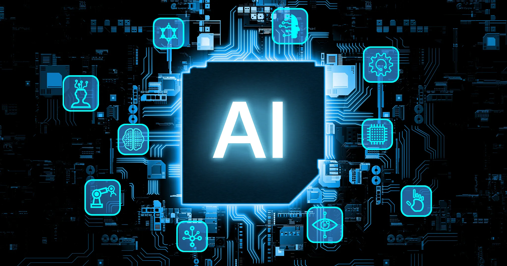

Inteligência Artificial: Oportunidades e Riscos para a Humanidade
A inteligência artificial (IA) é uma das mais poderosas ferramentas tecnológicas já criadas pelo ser humano. Baseada em sistemas capazes de aprender, raciocinar e tomar decisões, ela já está presente em quase todos os setores da sociedade, moldando a forma como vivemos, trabalhamos e nos relacionamos.
Como a IA pode ajudar a humanidade
A IA tem potencial para resolver problemas que antes pareciam insolúveis. Na medicina, algoritmos já auxiliam no diagnóstico precoce de doenças como câncer e Alzheimer, analisando exames com rapidez e precisão superiores à humana. Em questões ambientais, modelos de IA ajudam a prever mudanças climáticas, otimizar o uso de energia e monitorar ecossistemas ameaçados.No cotidiano, assistentes virtuais e tradutores automáticos aproximam pessoas de diferentes culturas e idiomas. Na educação, sistemas adaptativos personalizam o aprendizado para cada estudante, respeitando seu ritmo e estilo de estudo. Em setores como agricultura e indústria, a IA otimiza processos, reduz desperdícios e aumenta a produtividade. Até mesmo em explorações espaciais, a IA desempenha papel crucial na análise de dados de sondas e telescópios.
Como a IA pode prejudicar a humanidade
Apesar de seus benefícios, a IA também carrega riscos significativos. Um dos mais discutidos é o impacto no mercado de trabalho: tarefas antes realizadas por humanos estão sendo automatizadas, podendo gerar desemprego em massa e ampliar desigualdades sociais. A concentração de poder tecnológico em poucas empresas ou governos também preocupa, pois pode resultar em vigilância em massa e controle excessivo sobre a população. Sistemas de IA tendem a refletir os vieses existentes nos dados com que são treinados, reproduzindo ou até amplificando preconceitos e discriminações. Outro perigo é o uso da IA para fins bélicos, como drones autônomos ou ciberataques em larga escala. Há ainda o risco de dependência excessiva: quanto mais delegamos decisões a máquinas, mais vulneráveis ficamos a falhas, manipulações ou comportamentos inesperados desses sistemas.
O equilíbrio necessário
O desafio da humanidade não é apenas desenvolver a IA, mas garantir que ela seja usada de forma ética, segura e justa. Isso exige regulamentações claras, transparência nos algoritmos, educação digital para a população e um compromisso global de evitar que o poder dessa tecnologia seja usado contra o próprio ser humano. A inteligência artificial, no fim, é como qualquer ferramenta poderosa: pode ser um instrumento de progresso ou de destruição. Cabe a nós, como sociedade, decidir qual caminho seguiremos.
